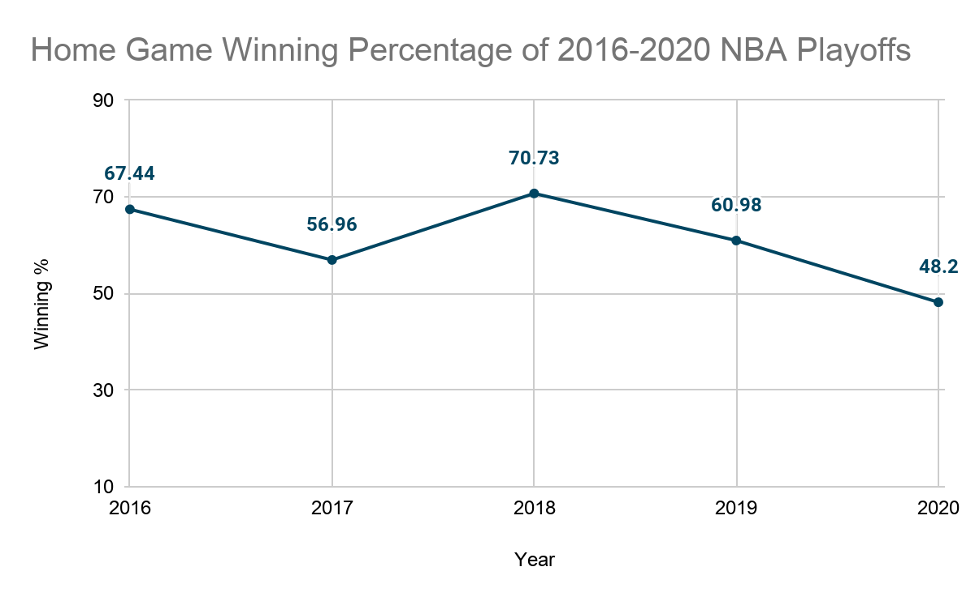
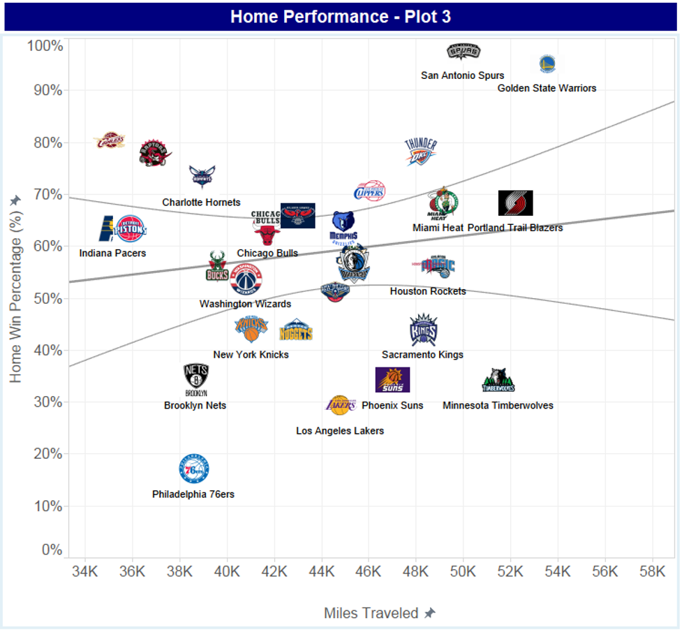

Bubble Basketball: A Brand New Game
By Michael Zhu | November 28, 2020

With 350 NBA players all in the same area in Disney World over the course of three months, the NBA Bubble was something that players and fans alike have never seen before. In the Bubble, instead of NBA players traveling thousands of miles by plane and playing in front of tens of thousands of fans on a daily basis, they have essentially become very well-paid AAU players. With an atmosphere so different from what NBA players are accustomed to, how was NBA basketball different in the Bubble? Perhaps the most notable difference was the spike in offensive production and shooting percentages in the NBA Bubble. According to Cleaning the Glass, during the 88 seeding games of the NBA Bubble, the 22 teams averaged 113.17 points per 100 possessions, an increase from the 111.95 they averaged in the shortened 2019-20 regular season. The league-average effective field-goal percentage also increased by 1 percent from 53.1% to 54.1% in the Bubble. This rise in offensive production could be attributed to the increasing shooting percentages in the Bubble, as multiple NBA players including Devin Booker and Tim Hardaway Jr. have said it’s easier to shoot in the Bubble courts due to the increase in depth perception from an empty court with no fans. As Tim Hardaway Jr. told The Ringer, “You can’t see through the backboard, shooting-wise, since it’s blacked out.” Sure enough, the league-average free-throw percentage increased by 2%, and although the three-point percentage only increased by 0.6%, we can see the effect of the emptier courts if we look at corner three-point percentage, which rose by 1.5%. Since the team benches were moved farther away from the sideline, NBA players not only have less distraction from yelling fans when shooting the ball, but they also have more landing room behind them when shooting from the corner. Another major difference in the NBA Bubble is the lack of home court advantage. According to Bleacher Report, The NBA has the widest home-court advantage among the major North American sports, with the home team winning about 56-58 percent of games and 65 percent of all playoff games since 1984. Without 20,000 fans yelling, cursing, and taunting you at the top of their lungs, NBA games feel much different.
In fact, as shown in the graph above, 2020 was the first playoffs in the past 5 years where there were actually less wins by the home team than the road team, with a 48.2% home team winning-percentage. One factor that affects home court advantage in the regular season that was nonexistent in the NBA bubble was travel (although travel is most likely not as much a factor in the postseason as both teams travel in accordance with each other). In a pre-pandemic NBA regular season, the away team would have to travel thousands of miles by plane and bus to reach the home team’s stadium, which may put the away team at a disadvantage since their bodies are less rested. In a 2007 study “The Role of Rest in the NBA Home-Court Advantage” conducted by UPenn, they found that “the lack of rest for the road team, while not a dominant factor, is an important contributor to the home court advantage in the NBA.” To explore this effect with a visualization, we can observe the scatter plot below that denotes the estimated miles traveled by each NBA team and their home win percentage during the 2015-2016 season (graphic provided by The Stats Zone).
As can be seen by the graph, a simple scatter plot of miles traveled versus home win percentage proves to not be very useful. Since a team’s winning percentage is largely dependent on other factors like their team’s skill level, chemistry, and coaching, distance traveled is not the best indicator of a team’s performance and needs to be studied in methods with more sample data and less confounding variables to truly see the effect that distance traveled has on home court advantage. During the last couple months, we have really seen a brand new game of basketball emerge in the Bubble. With the absence of the usual thousands of fans packed into the the stadium, as well as the lack of travel, the playing field is evened out and we have seen it prove especially beneficial to a variety of players in the Bubble like Jimmy Butler, Gary Trent Jr., TJ Warren. With the NBA season planning to start soon in December, with the coronavirus probably still around, perhaps we will see some of these changes become the new norm for NBA basketball.